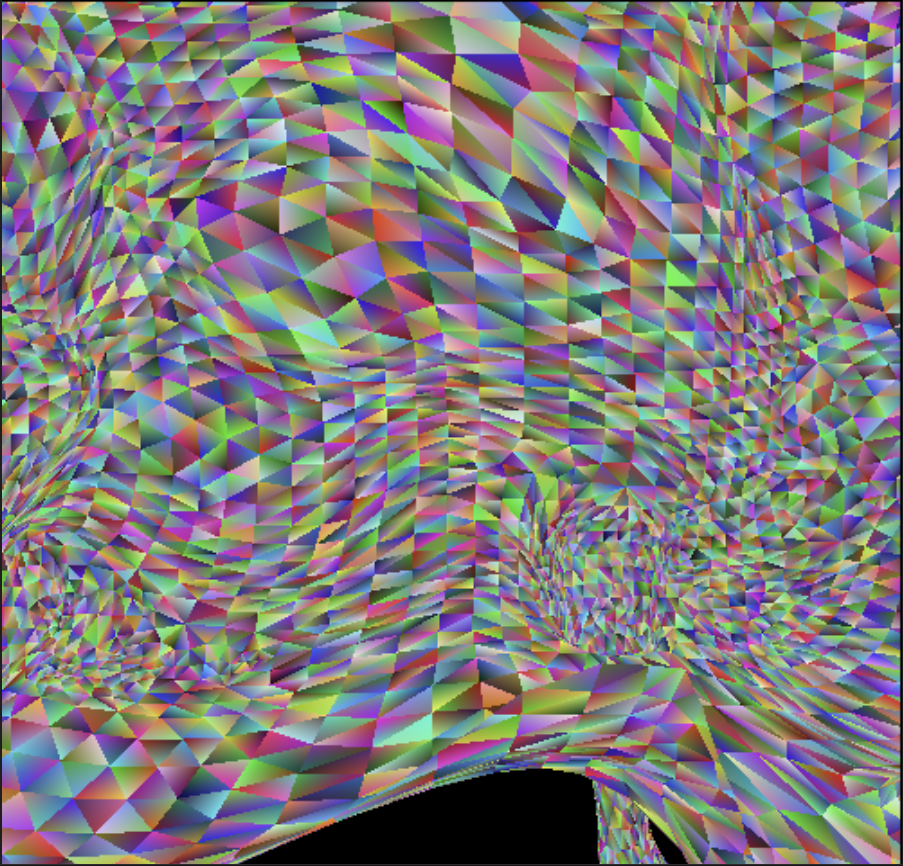
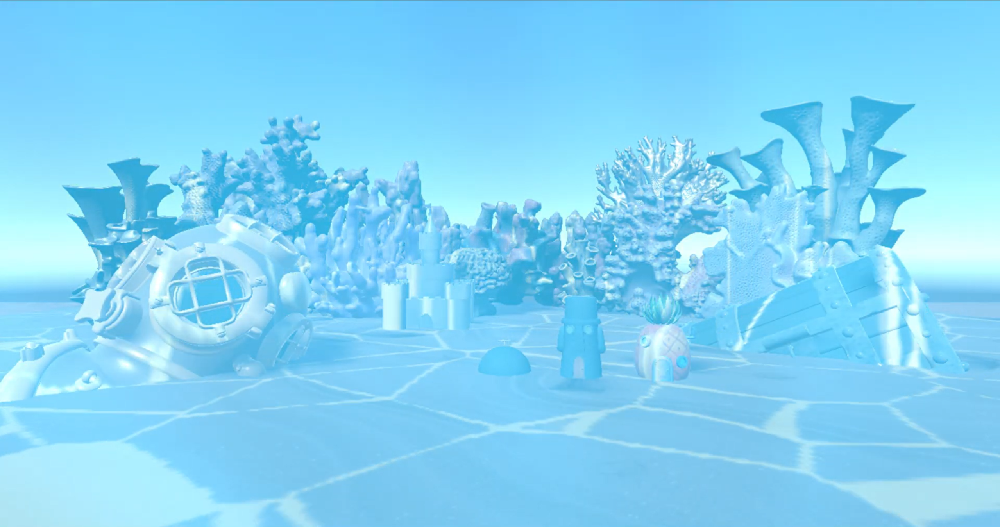

🏆 1st Place, Ratchet It Up! Game Jam
A first-person action game set inside a giant cube, where the player can shift gravity to any of the six walls at will. Every physics object and every enemy falls toward the new floor, turning each fight into a puzzle of positioning and timing. Built by a small team over several weeks, the game took first place in the jam.
I designed and built the enemy AI and combat systems:
Unreal Engine 5 · Blueprints · Mixamo · Git/GitHub
In this project I built a rasterizer. The project was developed in C++ (Code snippet shown below).

void initialize_render(driver_state& state, int width, int height)
{
state.image_width=width;
state.image_height=height;
state.image_color= new pixel[width*height];
state.image_depth= new float[width*height];
std::cout<<"TODO: allocate and initialize state.image_color and state.image_depth."<::max();
}
}
void render(driver_state& state, render_type type)
{
const data_geometry* tri[3];
switch (type) {
case render_type::triangle: {
data_geometry dummytri[3];
int count = 0;
data_vertex v;
for(int i = 0; i < state.num_vertices; i++) {
v.data = new float[state.floats_per_vertex];
dummytri[count].data = new float[MAX_FLOATS_PER_VERTEX];
for(int j = 0; j < state.floats_per_vertex; j++) {
v.data[j] = state.vertex_data[i*state.floats_per_vertex+j];
}
state.vertex_shader(v, dummytri[count], state.uniform_data);
//Re homogenize here: BUT DONT REHOMOGENIZE W!
if(dummytri[count].gl_Position[3] != 0) {
dummytri[count].gl_Position[0]/=dummytri[count].gl_Position[3];
dummytri[count].gl_Position[1]/=dummytri[count].gl_Position[3];
dummytri[count].gl_Position[2]/=dummytri[count].gl_Position[3];
}
tri[count] = &dummytri[count];
count++;
if(count == 3) {
rasterize_triangle(state, *tri[0], *tri[1], *tri[2]);
count = 0;
}
}
break;
}
...
}
In this project I built an underwater scene, simulating caustics with worley noise as a 2D texture and god rays with ray marching. The project was developed with C# in Unity (Code snippet shown below).

void Start()
{
noise = new float[sizeX, sizeY, sizeZ];
// Generate Worley feature points
Vector3[] points = new Vector3[numFeaturePoints];
for (int i = 0; i < numFeaturePoints; i++)
{
points[i] = new Vector3(
Random.Range(0f, sizeX),
Random.Range(0f, sizeY),
Random.Range(0f, sizeZ)
);
}
// Compute Worley (F2 - F1)
for (int x = 0; x < sizeX; x++)
{
for (int y = 0; y < sizeY; y++)
{
for (int z = 0; z < sizeZ; z++)
{
float f1 = float.MaxValue;
float f2 = float.MaxValue;
Vector3 p = new Vector3(x, y, z);
foreach (var fp in points)
{
float d = Vector3.Distance(p, fp);
if (d < f1)
{
f2 = f1;
f1 = d;
}
else if (d < f2)
{
f2 = d;
}
}
float w = Mathf.Clamp01(f2 - f1);
w = Mathf.Pow(w, 6f);
noise[x, y, z] = w;
}
}
}
// Create Texture (only X/Z resolution matters visually)
sliceTexture = new Texture2D(sizeX, sizeZ);
sliceTexture.filterMode = FilterMode.Trilinear;
sliceTexture.anisoLevel = 8;
// Setup Quad
quad.transform.position = Vector3.zero;
quad.transform.rotation = Quaternion.Euler(90, 0, 0);
quad.transform.localScale = new Vector3(10f, 10f, 1f);
displayMaterial = quad.GetComponent().material;
displayMaterial.SetTexture("_BaseMap", sliceTexture);
displayMaterial.SetTextureScale("_BaseMap", Vector2.one);
}